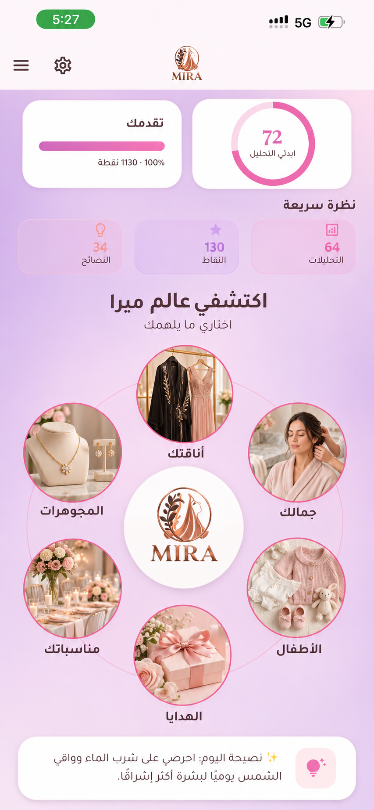

التنفيذ الحي: MiraWorldOrbitDiscover داخل dashboard_screen بعد «نظرة سريعة» وقبل «نصيحة اليوم». لقطات الجهاز: اختبار ودجت بمقاسين 320×640 و390×844 (انظر TAP_MATRIX.md).
MiraWorldOrbitDiscover
dashboard_screen